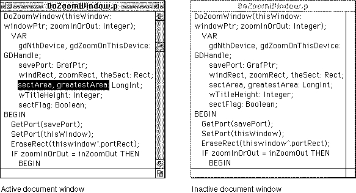

Active and Inactive Windows
The window in which the user is currently working is the active window. The active window is the frontmost window on the desktop. It is identified visually by the "racing stripes" in its title bar.The active window is the target of keyboard activity. It often contains a blinking insertion point (also called the caret) marking the place where new text or graphics will appear. When the user selects text in an active window, your application should highlight the text with inverse video; if the window becomes inactive, you remove the highlighting. You can use a secondary selection technique, such as an outline, to mark a selection in an inactive window. You display scroll bars only in the active window. Figure 4-3 illustrates a sample document window in active and inactive states.
Except for the active window, all document windows on the desktop, whether they belong to your application or another, are inactive. Your application can process documents in inactive windows, but only the active window interacts with the user.
For example, if the user chooses Save from the File menu, your application saves
only the document in the active window.Figure 4-3 Active and inactive document windows

To make a window active, the user clicks anywhere in its contents or frame. When
the user activates one of your windows, you call the Window Manager to highlight
the window frame and title bar; you activate the controls and window contents.
As a window becomes active, it appears to the user to move forward, in front of all
other windows.When the user clicks in an inactive document window, you should make the window active but not make any selections in the window in response to the click. To make a selection in the window, the user must click again. This behavior protects the user from losing an existing selection unintentionally when activating a window.
When a window that belongs to your application becomes inactive, the Window Manager redraws the frame, removing the highlighting from the title bar and hiding
- Note
- The Finder makes selections in response to the first click in an inactive window, because this action is more natural for the way Finder windows are used. You might find that users expect the first click to cause a selection in some other special-purpose windows created by your application. This behavior is seldom appropriate in document windows.
the close and zoom boxes. Your application hides the controls and the size box and removes highlighting from application-controlled elements.When the user reactivates a window, reinstate the window as it was before it was deactivated. Draw the scroll box in the same position and restore the insertion point or highlight the previous selection.